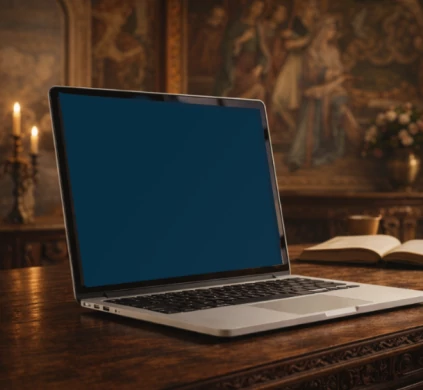

Sommaire 📑
Quand vous ouvrez votre ordinateur le matin, que voyez-vous vraiment : votre génie... ou votre chaos caché ?
La différence entre un miroir et un placard change tout.
Et pourtant, la plupart des gens utilisent leur ordinateur comme un placard numérique : on y entasse, on y cache, on y accumule. Des dizaines de fichiers "sans titre", des dossiers "à trier", des captures d'écran datant de 2019 qui traînent sur le bureau.
Résultat : chaque fois que vous ouvrez votre machine, votre cerveau doit d'abord naviguer dans le désordre avant de pouvoir créer quoi que ce soit.
C'est épuisant. Et surtout, c'est évitable.
Le diagnostic en 30 secondes ⏱️
Voici un test simple pour savoir où vous en êtes avec votre environnement numérique.
Chaque matin, avant d'ouvrir un seul fichier, regardez votre bureau numérique et posez-vous cette question :
"Si un étranger voyait cet écran, que comprendrait-il de mes priorités aujourd'hui ?"
Si la réponse est "rien" ou "le chaos", votre ordinateur est un placard.
Miroir vs Placard : quelle différence ?
Un miroir montre instantanément QUI vous êtes et OÙ vous allez. Il reflète vos priorités actuelles, vos projets vivants, votre énergie du moment. Vous y voyez ce qui compte pour vous maintenant.
Un placard cache tout derrière des portes fermées. Vous savez que c'est là, quelque part, mais il faut fouiller pour retrouver ce dont vous avez besoin. Vous perdez du temps et de l'énergie à chercher au lieu de créer.
La question n'est pas de savoir si vous êtes organisé ou non. La question est : votre organisation vous soutient-elle ou vous freine-t-elle ?
Pourquoi votre chaos numérique épuise votre énergie 🔋
Le stress naît souvent de ce qu'on ne voit pas.
Quand votre environnement numérique est encombré, votre cerveau reste en alerte permanente. Il sait qu'il y a des choses en attente, des fichiers perdus, des projets abandonnés quelque part dans les profondeurs de vos dossiers.
C'est ce qu'on appelle la charge cognitive invisible : même si vous ne regardez pas activement ces fichiers, ils consomment de l'énergie mentale en arrière-plan.
Du coup, vous passez plus de temps à chercher qu'à créer. Plus de temps à vous demander "où j'ai mis ce fichier ?" qu'à avancer sur ce qui compte vraiment.
Et cette friction quotidienne s'accumule : 5 minutes perdues par-ci, 10 minutes par-là. Au bout d'une semaine, ce sont des heures d'énergie gaspillées. Au bout d'un mois, c'est votre motivation qui s'érode.
L'impact sur votre bien-être
Cette désorganisation crée un cercle vicieux :
• Vous vous sentez dépassé avant même de commencer
• Vous procrastinez parce que "chercher ce fichier" semble décourageant
• Vous accumulez encore plus de désordre parce que vous n'avez pas de système clair
• Vous finissez fatigué, frustré et moins productif
Mais il existe une autre approche. Une approche qui transforme votre ordinateur en allié quotidien au lieu d'une source de friction permanente.
La méthode "Carte de curiosité vivante" 🗺️
Voici la première stratégie pour transformer votre ordinateur en miroir.
Créez un document unique que vous ouvrez en page d'accueil de votre navigateur ou de votre ordinateur. Un seul document, simple et puissant.
Les 3 colonnes essentielles
Dedans, organisez 3 colonnes que vous mettrez à jour chaque semaine :
→ Ce qui m'anime cette semaine
Notez vos 3 obsessions du moment. Pas vos obligations, mais ce qui vous passionne vraiment en ce moment. Ce sur quoi vous aimeriez passer du temps si vous aviez une heure libre.
→ Mes questions ouvertes
Listez ce que vous explorez sans avoir encore de réponse. Les sujets qui vous intriguent, les problèmes que vous cherchez à résoudre, les domaines où vous êtes en apprentissage.
→ Mes connexions surprenantes
Identifiez les liens entre vos idées. Comment votre projet A pourrait nourrir votre réflexion B. Où vous voyez des patterns émerger entre différents domaines de votre vie.
C'est votre miroir mental actualisé.

L'inspiration Da Vinci
Léonard de Vinci faisait exactement ça dans ses carnets : il créait des index vivants de sa pensée.
Pas des listes mortes dans un placard, mais une cartographie vivante de son génie en mouvement. Il reliait l'anatomie à l'architecture, la peinture à l'ingénierie, l'observation de la nature à ses inventions.
Vous pouvez faire pareil avec votre vie professionnelle et personnelle.

Pourquoi ça fonctionne
Parce que votre cerveau adore la clarté.
Quand vous voyez immédiatement ce qui vous anime, vous n'avez plus besoin de "vous rappeler" où vous en étiez. Vous le voyez. Vous le reconnaissez.
Et la reconnaissance est toujours plus rapide que la recherche.
En plus, cette carte évolue avec vous. Chaque semaine, vous ajustez. Certaines obsessions disparaissent, d'autres émergent. Vos questions trouvent des réponses et de nouvelles apparaissent.
C'est un document vivant, comme votre pensée. Pas un système rigide qui vous enferme, mais un espace qui respire avec vous.
Le système "Constellation Da Vinci" ✨
Maintenant, passons à l'organisation de vos fichiers et dossiers.
La plupart des systèmes d'organisation sont basés sur des hiérarchies rigides : Projet > Sous-projet > Sous-sous-projet > Fichier. Vous devez cliquer 4 ou 5 fois pour accéder à ce dont vous avez besoin.
C'est logique en théorie. Mais en pratique, ça crée de la friction.
Une organisation par constellations
Au lieu de hiérarchies, créez des constellations thématiques au même niveau, directement visibles sur votre bureau :
🔥 ÉNERGIE
Ce qui vous passionne maintenant. Les projets qui vous donnent de l'élan, qui vous motivent à vous lever le matin.
🌱 GERMINATION
Ce qui émerge doucement. Les idées en développement, les projets qui ne sont pas encore mûrs mais qui méritent votre attention.
⚡ IMPACT
Ce qui produit des résultats concrets. Les activités qui génèrent des revenus, qui font avancer vos objectifs principaux.
🎨 LABORATOIRE
Vos expérimentations et explorations. Les tests, les apprentissages, les essais sans pression de résultat.
Tout est visible d'un coup d'œil, comme les étoiles d'une constellation dans le ciel nocturne.
L'approche Da Vinci
Léonard de Vinci organisait par thèmes interconnectés (anatomie, machines, art, architecture), pas par hiérarchies rigides.
Il savait qu'une idée en anatomie pouvait nourrir une invention mécanique. Qu'une observation en peinture pouvait éclairer un principe d'architecture.
Un miroir montre tout simultanément. Un placard cache par étages.
Comment l'appliquer concrètement
Prenez vos projets actuels et demandez-vous : dans quelle constellation appartient ce fichier ?
Exemples pratiques :
• Un projet client qui vous enthousiasme → ÉNERGIE
• Une idée de formation que vous explorez → GERMINATION
• Un document de vente qui génère des revenus → IMPACT
• Un test de nouvel outil ou méthode → LABORATOIRE
Ensuite, créez ces 4 dossiers principaux sur votre bureau. Placez-y uniquement vos fichiers actifs, ceux sur lesquels vous travaillez maintenant ou dans les prochaines semaines.
Archivez le reste ailleurs. Pas besoin de tout jeter, mais sortez-le de votre champ de vision quotidien.
L'objectif : quand vous ouvrez votre ordinateur, vous voyez immédiatement l'état de votre activité. Pas besoin de cliquer 5 fois pour retrouver ce qui compte.
Comment démarrer dès aujourd'hui 🚀
Vous n'avez pas besoin de tout réorganiser en une fois. Commencer petit et simple fonctionne mieux que vouloir tout transformer d'un coup.
Étape 1 : Créez votre Carte de curiosité vivante
Ouvrez un Google Doc, une page Notion ou un simple fichier texte. Créez vos 3 colonnes. Remplissez-les avec ce qui est vrai pour vous aujourd'hui.
Pas besoin que ce soit parfait. Juste honnête.
Étape 2 : Rendez-la visible
Définissez cette carte comme page d'accueil de votre navigateur. Ou épinglez-la en haut de votre bureau. Ou ajoutez-la à vos favoris avec un raccourci clavier.
L'idée : elle doit être la première chose que vous voyez quand vous ouvrez votre ordinateur.
Étape 3 : Mettez-la à jour chaque semaine
Chaque lundi matin, prenez 5 minutes pour actualiser vos 3 colonnes. Qu'est-ce qui a changé ? Qu'est-ce qui vous anime maintenant ? Quelles nouvelles questions émergent ?
C'est tout.
Ensuite, si vous le souhaitez, vous pourrez créer vos constellations thématiques. Mais commencez par le miroir mental. C'est lui qui change tout.
Parce qu'une fois que vous voyez clairement ce qui vous anime, organiser le reste devient naturel. Vous n'avez plus besoin de système compliqué : vous savez instinctivement où ranger chaque chose.
Ce qu'il faut retenir 💡
Le stress naît souvent de ce qu'on ne voit pas.
Quand votre environnement numérique devient un miroir fidèle de votre pensée, vous cessez de chercher. Vous reconnaissez.
Et cette reconnaissance libère de l'énergie pour ce qui compte vraiment : créer, avancer, développer vos propres ressources.
Votre ordinateur peut devenir un allié quotidien au lieu d'une source de friction permanente. Il peut soutenir votre élan au lieu de le freiner.
La transformation commence par une simple question : "Qu'est-ce que mon écran reflète de moi aujourd'hui ?"
Vous avez déjà testé un système d'organisation qui a vraiment changé votre rapport au stress numérique ?
Partagez-le en commentaire ci-dessous, ça pourrait inspirer quelqu'un qui en a besoin aujourd'hui.
Partagez cet article
Si cet article vous a aidé, partagez-le avec quelqu'un qui pourrait en bénéficier. Parfois, une simple idée au bon moment peut tout changer.